FleetMiraApi-Dienst¶
FleetMiraApi stellt die FLEET-Mira-Schnittstellen als eigenständigen HTTPS-Dienst auf dem Enterprise-Server bereit. Mobile Apps und freigegebene Integrationen erreichen damit eine feste Serveradresse, auch wenn kein Desktop-Client geöffnet ist.
Implementierungs- und Lieferstand
Diese Seite beschreibt den neuen Entwicklungsstand für 1.1.0-beta9. Ein älteres Setup enthält die Komponente noch nicht automatisch. Das eingesetzte Setup muss FleetMiraApi ausdrücklich enthalten. Quelltests, installierte Serverabnahme und Android-Gerätetest sind getrennte Nachweise.
Funktion, Zweck und Einsatzgebiet¶
Das Modul übernimmt das HTTP-Hosting der vorhandenen mobilen, Geräte-, Fahrer- und Telematik-APIs sowie des eingerichteten Verstoßportals. Die gemeinsame Fachlogik und PostgreSQL-Datenbank bleiben erhalten. Es ist für Android-/spätere iOS-Apps, kundeneigene Integrationen und zentrale Netzwerkzugriffe bestimmt.
FleetMiraApi prüft HTTPS, Hostnamen, Token, Scopes, Benutzerrechte und Lizenzfreigaben. Kurze Fachzugriffe beantwortet es direkt; mobile Imports und andere zentrale Hintergrundaufgaben verarbeitet weiterhin FleetMiraWorker. Der API-Dienst ersetzt weder PostgreSQL noch den Worker oder Archivdienst. Der FiBu-Export ist weiterhin eine ausgehende Verbindung und kein neuer API-Empfänger.
Die lokale Fahrer-API des Desktops behält ihre Loopback-Sitzung. Zentraler Fahrerzugriff verwendet eigene Integrationstokens und ausdrückliche globale Datenfreigabe. Basic und Pro behalten ihre bisherige lokale SQLite-/Worker-Zusammensetzung; der eigenständige Serverdienst gehört zu Enterprise.
Funktionsweise¶

Mermaid-Quelle des Diagramms
flowchart TB
Mobile["DTCO-Android-App"] -->|"HTTPS"| API["FleetMiraApi"]
Integration["Freigegebene Integration"] -->|"HTTPS"| API
Browser["Browser: /health"] -->|"HTTPS"| API
API --> DB[("PostgreSQL: Daten und Aufträge")]
API --> Logs["Umlaufendes Dienstprotokoll"]
Admin["Enterprise-Administration"] --> DB
DB --> Worker["FleetMiraWorker: Aufträge mit Leases"]
Worker --> Processing["Import und Hintergrundverarbeitung"]API, Worker und PostgreSQL können auf demselben Server installiert werden. Sie bleiben getrennte Prozesse und Dienste. Bei einer späteren Verteilung müssen Aufnahmespeicher, Portalgeheimnisse und Zertifikatsdateien an den jeweiligen Hosts passend bereitgestellt werden.
Für die Android-Anmeldung öffnet die App einen geschützten Browser-Tab, erhält nach Anmeldung einen einmaligen Code und tauscht ihn mit S256-PKCE gegen Tokens aus. Zugangstokens gelten 15 Minuten; Refresh-Tokens erneuern sie innerhalb einer maximal 30-tägigen App-Sitzung. Integrationstokens werden unter Administration benutzergebunden mit Scopes und Gültigkeit ausgestellt. Näheres beschreibt die Betriebsanleitung.
Voraussetzungen¶
| Bereich | Voraussetzung |
|---|---|
| Betriebssystem | Eine vom Enterprise-Setup unterstützte x64-Windows-/Windows-Server-Installation; der Installer setzt mindestens Windows-Version 10.0 voraus. Den tatsächlich verwendeten Serverstand installiert abnehmen. |
| Installation | Enterprise-Applikationssetup mit Komponente api; lokale Administratorrechte für Installation und Windows-Dienstverwaltung. |
| Datenbank | Erreichbares PostgreSQL mit aktuellem Mira-Schema, Anwendungszugang und vorgesehener TLS-Konfiguration. Das serverseitige Setup verwendet PostgreSQL 17; die reguläre Schemamigration benötigt das Wartungskonto. |
| Hintergrundverarbeitung | FleetMiraWorker mit derselben Enterprise-Datenbank für Imports und zentrale Jobs; bei Archivfunktionen zusätzlich der eingerichtete FleetMiraArchive-Dienst. |
| Lizenz und Benutzer | Gültiger zentraler Enterprise-Nachweis mit API-Freigabe; aktive Benutzer mit den jeweils erforderlichen Fachrechten. Administration benötigt users.manage und settings.manage. |
| HTTPS und DNS | Stabiler DNS-Name, dazu passendes gültiges Serverzertifikat samt Kette und privatem Schlüssel; die Clients müssen der CA vertrauen. |
| Speicher | Geschütztes beschreibbares Log- und mobiles Aufnahmeverzeichnis. Standardmäßig bis zu 1 GiB Logbudget, zusätzlich Platz für Uploads, temporäre Dateien und fachliche Archive. Uploads sind auf 128 MiB je Anfrage begrenzt. |
| Ressourcen | CPU-/RAM- und I/O-Bedarf zusätzlich zu PostgreSQL und Worker anhand der tatsächlichen Parallelität bemessen. Quelltests begründen keine verbindliche Last- oder Hardwarefreigabe. |
| Softwaremodule | Das vollständige Windows-Paket bündelt die Python-Laufzeit, pywin32, Flask, Cheroot mit TLS, PostgreSQL-Treiber und die gemeinsamen Fachmodule. Für das installierte Paket ist keine gesonderte Python-Installation erforderlich. Optional wird zeroconf für lokale Diensterkennung verwendet. |
Der Dienst verwendet NT SERVICE\FleetMiraApi. Das Setup richtet Autostart und Wiederanlauf nach Fehlern ein. Das Konto benötigt Lesezugriff auf seine Konfiguration und TLS-Dateien sowie Änderungszugriff auf seine Logs und den mobilen Aufnahmespeicher. Private Lizenz-/Sicherungsschlüssel des Workers werden dem API-Dienst nicht übertragen.
Netzwerk und Firewall¶
| Richtung | Verbindung | Freigabe |
|---|---|---|
| Eingehend zum API-Server | TCP 8443 als Einrichtungsstandard oder der ausdrücklich konfigurierte API-Port | Nur für die benötigten Clientnetze beziehungsweise den vorgesehenen VPN-/Netzzugang. |
| API/Worker/Enterprise-Clients zur Datenbank | TCP 5432 oder der konfigurierte PostgreSQL-Port | Nur zwischen den berechtigten Anwendungshosts und PostgreSQL; keine öffentliche Datenbankfreigabe. |
| Optional im lokalen Netz | DNS-SD/mDNS, UDP 5353 | Nur bei aktivierter lokaler Servererkennung; ersetzt weder HTTPS noch Anmeldung und wird meist nicht über Netzgrenzen geroutet. |
| Ausgehend nach Bedarf | DNS, Zeitsynchronisation und die ausdrücklich benötigten Geräte-/Fremdsystemziele | Nach vorhandener Betriebsrichtlinie; Lizenzprüfung und ausgehende Hintergrundkonnektoren bleiben im Worker. |
Das Setup öffnet keinen API-Port automatisch. Beispiel für eine eng begrenzte Windows-Firewallregel, in einer administrativen PowerShell auszuführen und an das eigene Netz anzupassen:
New-NetFirewallRule -Name "FleetMiraApi-HTTPS" `
-DisplayName "Fleet Mira API HTTPS" `
-Direction Inbound -Action Allow -Protocol TCP -LocalPort 8443 `
-Profile Domain,Private -RemoteAddress 192.168.10.0/24
192.168.10.0/24 ist ein Beispielnetz. Bei anderem Port müssen Regel, Dienstkonfiguration und Clientadresse zusammenpassen. Für einen Rückbau nur die eigene Regel entfernen: Remove-NetFirewallRule -Name "FleetMiraApi-HTTPS". Zertifikatswarnungen nicht durch Abschalten der Prüfung umgehen. Ein vorgeschalteter Proxy benötigt eine separat freigegebene TLS-/Vertrauenskonfiguration; beliebige X-Forwarded-*-Header werden nicht als HTTPS-Nachweis akzeptiert.
Installation und Einrichtung¶
Vor einem Update alle Änderungen in den auf diesem Server geöffneten Mira-Clients speichern und die Clients beenden. Ein Client in einer anderen Windows-Sitzung kann den Austausch der Programmdateien blockieren. Nach einem abgebrochenen Setup immer Installationskennung und Dienstzustände kontrollieren; eine gültige Kennungsdatei wird beim neuen Upgradepfad bis zum tatsächlichen Dateiaustausch erhalten.
- Datenbank und Konfiguration sichern und die allgemeinen Enterprise-Voraussetzungen erfüllen. Ein Setup verwenden, das den neuen API-Dienst tatsächlich enthält.
- Im serverseitigen Setup die Komponente Fleet Mira API Windows service auswählen; für gemeinsame Installation zusätzlich Worker und gegebenenfalls Client wählen. Bei unbeaufsichtigter Installation entspricht dies beispielsweise
/COMPONENTS=client,worker,api; Datenbankzugänge werden über die geschützte/MIRACONFIG-Datei bereitgestellt, nicht als Kennwort im Prozessargument. - Die reguläre PostgreSQL-Schemaaktualisierung durchführen. Der API-Dienst darf bei einem PostgreSQL-Fehler niemals eine SQLite-Datenbank anlegen oder verwenden.
- Zertifikat und Schlüssel auf dem API-Server bereitstellen. DNS-Namen, Zertifikatgültigkeit und Leserechte des Dienstkontos prüfen.
- Im Enterprise-Client unter Administration → Kommunikation und Integrationen API-Konfiguration öffnen. Zum Beispiel
https://fleet.example.internal:8443, passende Bind-Adresse, Port 8443 und die serverseitigen Zertifikats-/Schlüsselpfade eintragen. Loggrenzen und erlaubte Android-Scopes prüfen und speichern. - API-Dienst öffnen, die passende Instanz wählen und Neu laden ausführen. Ohne Konfiguration bleibt der Dienst
UNCONFIGURED; ein laufender Windows-Dienst allein beweist daher keinen geöffneten HTTPS-Port. - Die benötigte Firewallregel einrichten und den folgenden Browser-Funktionstest von einem vorgesehenen Clientnetz aus ausführen.
- Unter API-Zugänge Integrationstokens mit Benutzerzuordnung, Audience, Scopes und Gültigkeit anlegen oder die DTCO-App am gespeicherten Serverziel per Browseranmeldung verbinden. Tokens gehören weder in URLs noch in Bildschirmfotos oder Supportprotokolle.
Vorhandene aktivierte mobile/Telematik-Konfigurationen können beim ersten Start übernommen werden. Bestehende Zusatzports bleiben als Kompatibilitätslistener erhalten. Herkunftsdateien werden nicht gelöscht. Details zu Übernahme, Rechtevergabe, Widerruf und Rückbau stehen in der Betriebsanleitung.
Einrichtung in der Admin-Oberfläche¶
Die Admin-Oberfläche ist Teil des Enterprise-Clients, kein öffentliches Web-Dashboard. Mit einem berechtigten Benutzer anmelden, Administration → Kommunikation und Integrationen aufklappen und den gewünschten Arbeitsbereich öffnen. Zu Beginn einer Sitzung ist die Arbeitsfläche leer; die Navigationsauswahl öffnet den jeweiligen Tab. Die folgenden Screenshots zeigen die tatsächlichen Anwendungskomponenten mit isolierten PostgreSQL-Beispieldaten. Servernamen, Pfade und Freigaben an die eigene Installation anpassen. Abbildungen lassen sich durch Anklicken in voller Auflösung öffnen.
API-Konfiguration speichern¶

- URL: die von Clients erreichbare HTTPS-Adresse einschließlich Port, etwa
https://fleet.example.internal:8443. - Server: lokale Bind-Adresse.
0.0.0.0bindet alle IPv4-Schnittstellen; die Firewall begrenzt den Zugriff auf die freigegebenen Netze. - Port: muss zu URL und Firewall passen; im Beispiel 8443.
- Zertifikat / Privater Schlüssel: absolute Dateipfade auf dem API-Server. Die Zertifikatsdatei enthält die erforderliche Zertifikatskette. Der private Schlüssel bleibt auf dem Server und wird nicht an Clients verteilt.
- Protokolle: Aufbewahrung in Tagen, Dateigröße und Gesamtbudget in MiB. Die Beispielwerte sind 30 Tage, 50 MiB und 1024 MiB.
- Berechtigungen / dtco-android: zulässige Scopes für die browsergestützte App-Anmeldung. Nur benötigte Rechte aktivieren; die aktuellen Benutzerrechte begrenzen den Zugriff zusätzlich.
Speichern schreibt die zentrale PostgreSQL-Konfiguration. Anschließend unter API-Dienst die Instanz auswählen und Neu laden ausführen. Verwerfen lädt die gespeicherten Werte erneut. Bei Zertifikatswechsel auch Dateirechte, Kette und Gültigkeit prüfen. Nach dem Speichern akzeptiert die Hostprüfung den Host der eingetragenen URL; alternative Clientadressen nicht ungeprüft voraussetzen.
Windows-Dienst und API-Instanz kontrollieren¶

Der Windows-Dienst heißt FleetMiraApi und startet automatisch. Auf dem Server lässt er sich in services.msc oder über die lokale Verknüpfung FLEET Mira API kontrollieren. Die zentrale Seite API-Dienst zeigt die gemeldete Instanz und ihren letzten Heartbeat. Ein alter Heartbeat ist kein Nachweis eines weiterhin laufenden Prozesses.
| Aktion / Anzeige | Verwendung |
|---|---|
| Aktualisieren | Instanzen und zuletzt gemeldeten Zustand aus PostgreSQL laden. |
| Diagnose | Einen Diagnoseauftrag an die ausgewählte laufende Instanz senden. |
| RUNNING / listener_alive | Der Listener war beim letzten Heartbeat aktiv. Zusätzlich den HTTPS-Funktionstest durchführen. |
| UNCONFIGURED | Konfiguration oder TLS-Einrichtung fehlt; ein laufender Windows-Dienst kann dabei noch keinen HTTPS-Listener haben. |
| licensed / logging_available | Gemeldete Betriebsfreigabe und Verfügbarkeit der Protokollierung prüfen. |
| API pausieren / API fortsetzen | Fachzugriffe vorübergehend aussetzen beziehungsweise wieder freigeben. Der öffentliche Prozessnachweis unter /health/live ist kein Fachbereitschaftstest. |
| DEBUG (15 min) | Für eine begrenzte Fehlersuche zusätzliche technische Protokollierung aktivieren. |
| Neu laden | Gespeicherte Konfiguration erneut einlesen; anschließend Heartbeat und HTTPS prüfen. |
Die Aktionen werden als zentrale Aufträge bearbeitet. Bei gestopptem Dienst oder ausgefallener Datenbank die lokale Konsole beziehungsweise Windows-Dienstverwaltung verwenden. Ein fehlender Listener wird nicht durch eine erfolgreiche Datenbankabfrage ersetzt.
Benutzergebundene API-Zugänge einrichten¶

Unter API-Zugänge → Token erstellen den aktiven Besitzer, eine aussagekräftige Bezeichnung, den passenden API-Typ (mobile, devices, telematics oder drivercard), die erforderlichen Scopes und eine Gültigkeit von 1 bis 365 Tagen wählen. Kunden-IDs beziehungsweise Alle Kunden nur entsprechend der vorgesehenen fachlichen Freigabe setzen; mobile Tokens verwenden keine Kundeneingrenzung über dieses Feld. Telematik benötigt die ausdrückliche globale Freigabe.

Nach dem Anlegen wird das Tokengeheimnis einmalig angezeigt. Sicher an die vorgesehene Integration übergeben und dort als Geheimnis speichern; nicht in URLs, Dokumentation oder Screenshots übernehmen. Die Liste zeigt Metadaten und kann durchsucht werden. Zum Entziehen den Zugang auswählen, Token widerrufen anklicken und bestätigen. Bestehende Tokens werden dadurch nicht verlängert oder erneuert.
Für die DTCO-Android-App ist die browsergestützte Anmeldung der reguläre Weg: Serveradresse in der App wählen, Browseranmeldung starten und mit dem vorgesehenen Mira-Benutzer anmelden. Die App erhält ihre Tokens automatisch über den PKCE-Codeaustausch und verwaltet deren Erneuerung. Ein manuell kopiertes Integrationstoken ist dafür nicht erforderlich. Android-Scopes, aktive Benutzerrechte und die zulässige Rücksprungadresse müssen zur eingerichteten App passen.
Protokolle zur Fehlersuche verwenden¶

Unter Protokolle die Instanz auswählen und Aktualisieren verwenden. Automatisch aktualisieren lädt während der sichtbaren Seite regelmäßig neue bereinigte Zeilen. Suche und Schweregradfilter schränken die Anzeige ein; Exportieren speichert die angezeigten Zeilen als JSON Lines. Zunächst Zeitpunkt, HTTP-Status und technischen Ereigniscode mit dem gemeldeten Fehler abgleichen, bei Bedarf kurzzeitig DEBUG aktivieren und erneut prüfen. Keine Zugangstokens, Kennwörter oder Schlüssel in Supportmaterial aufnehmen.
Zertifikatsvertrauen auf Clients einrichten¶
Bei einer privaten Unternehmens- oder Test-CA das öffentliche CA-Zertifikat nach Prüfung des Fingerabdrucks über die vorgesehene Geräteverwaltung verteilen. Windows-Browser benötigen es im passenden vertrauenswürdigen Stammzertifikatspeicher, Android-Geräte entsprechend in ihrer verwalteten beziehungsweise Benutzer-CA-Konfiguration. Die DTCO-App berücksichtigt System- und Benutzer-CAs. Serverzertifikat und CA müssen gültig sein; der aufgerufene DNS-Name beziehungsweise die IP-Adresse muss im SAN des Serverzertifikats stehen. Der private Server- oder CA-Schlüssel wird niemals auf Clients installiert. Nach der Verteilung Browser-Health-Test und App-Verbindung erneut prüfen.
Fleet Mira Health im Browser¶
Öffnen Sie https://<Server>:8443/health. Fleet Mira Health ist ohne Anmeldung erreichbar und zeigt API, Worker, PostgreSQL, laufende und zuletzt abgeschlossene Worker-Aufträge sowie Ressourcenwerte. Die öffentliche Ansicht ist Englisch. Das dunkle Material-3-Design ist unabhängig von der Browser-/Systemdarstellung voreingestellt; über den Darstellungsschalter ist eine ausdrücklich gewählte helle Ansicht möglich und wird in diesem Browser gespeichert.

| Bereich | Bedeutung |
|---|---|
| API / Worker / PostgreSQL | Zustand mit Symbol, Klartext und Code; Server, Version und letzte Rückmeldung. API-Rückmeldungen über 45 Sekunden und Worker-Rückmeldungen über 60 Sekunden gelten als veraltet. |
| Worker-Aufträge | Laufender und zuletzt abgeschlossener Auftrag je Worker mit Auftragsart, Status, Beginn, Ende und Dauer; Anzahl wartender/laufender Aufträge. Keine Auftragspayloads, Benutzer- oder Dateinamen. |
| Server | RAM gesamt/belegt, CPU-Auslastung, logische und physische Kerne. Gemeinsame Server werden zusammengefasst. |
| Dienstprozess und Datenträger | Prozess-RAM, Prozess-CPU und nutzbare Kerne; Gesamtkapazität, Belegung und freier Platz des Datenträgers am jeweiligen Dienst-Datenverzeichnis. Prozess-CPU: 100 % entspricht einem ausgelasteten logischen Kern. |
| Datenbank | Größe der tatsächlich angebundenen PostgreSQL-Datenbank. Dies ist keine Messung des freien Platzes auf einem entfernten Datenbankserver. |
API und Worker messen mit dem mitgelieferten psutil außerhalb von Browseranfragen, höchstens alle zehn Sekunden, und veröffentlichen die Werte über ihre Heartbeats. Jede Messung hat einen Zeitpunkt und eine Server-/Dienstzuordnung. Fehlende Werte erscheinen als nicht verfügbar; ältere Messungen sind gekennzeichnet. Betriebssystemwerte eines entfernten PostgreSQL-Servers werden ohne dortige Messquelle nicht erfasst. Es ist keine zusätzliche Firewall-Freigabe erforderlich.
Die sichtbare Seite aktualisiert sich alle zehn Sekunden, ohne Fokus oder Scrollposition zurückzusetzen. Bei markiertem Text pausiert die Aktualisierung. Refresh aktualisiert manuell. Bei Datenbankausfall bleibt die öffentliche Seite erreichbar und zeigt den Ausfall sowie verfügbare lokale API-Rückmeldungen mit ihrem Alter. ERR_CONNECTION_REFUSED bedeutet dagegen, dass kein Listener antwortet: Dienst und lokale Konsole prüfen.
Die Desktop-Ansicht besteht aus drei großen Spalten in der Reihenfolge FleetMiraWorker, FleetMiraApi, PostgreSQL. Jeder Dienstbereich bündelt seinen Zustand und seine zugehörigen Prozesswerte; die Datenbankgröße steht direkt bei PostgreSQL. Darunter folgen die Bereiche Serverinformationen mit Host- und Datenträgerwerten sowie Aufträge mit Warteschlange und laufendem/letztem Auftrag. Auf schmalen Bildschirmen stehen die Bereiche untereinander.
PostgreSQL: Leistung und Fleet-Mira-Datenbestand¶
Im PostgreSQL-Bereich stehen zusätzlich Version, Antwortzeit eines SELECT 1, Verbindungen der aktuellen Datenbank, sichtbare aktive Verbindungen, serverweite Verbindungen, konfiguriertes Verbindungslimit, Cache-Trefferquote, Transaktionen je Sekunde und Deadlocks seit dem angezeigten Statistik-Reset. Die Antwortzeit misst die Abfrage auf einer bestehenden Verbindung; die Transaktionsrate ist der Mittelwert zwischen zwei gültigen Messungen. Nach Dienststart oder Statistik-Reset erscheint die Rate zunächst als nicht verfügbar. Die Cache-Quote beschreibt PostgreSQL-Pufferzugriffe und nicht den Betriebssystem-Cache. Details zu Aussage und Leserechten erläutert die PostgreSQL-Dokumentation.
Die eigene Karte Fleet Mira: Datensätze insgesamt steht unterhalb von Aufträge in der rechten unteren Spalte. Auf schmalen Bildschirmen folgt sie ebenfalls unmittelbar auf die Aufträge. Die PostgreSQL-Spalte enthält ausschließlich Datenbankzustand, Größe und Leistungsdaten. Die Karte zählt exakt die Zeilen der folgenden Tabellen:
| Anzeige | Grundlage |
|---|---|
| Fahrzeuge | fleet_vehicle, einschließlich archivierter Fahrzeuge |
| Personal | fleet_person, einschließlich archivierter Personalstammsätze; keine Benutzerkonten |
| DDD-Archive | ddd_archive, einschließlich logisch gelöschter Archive; keine einzelnen Tachographen-Fakten |
| Führerscheinkontrollen | fleet_license_check, gespeicherte Kontrollereignisse einschließlich negativer Ergebnisse; keine Fälligkeiten |
| Kostenbuchungen | fleet_vehicle_cost_entry, einschließlich Entwürfen, Gutschriften, Stornos und Archivdatensätzen; Anzahl statt Geldsumme |
Leistungsdaten werden im API-Heartbeat höchstens alle 30 Sekunden, Datensatzzähler höchstens alle 60 Sekunden ermittelt. Die Browseraktualisierung löst keine zusätzlichen Messabfragen aus. Verbindungen und Abfragen sind zeitlich begrenzt und rein lesend. Fehler beeinflussen die Anzeige der Messwerte, nicht den Dienstbetrieb. Der API-Datenbankbenutzer benötigt für Zähler Leserechte auf den fünf Tabellen. Es werden keine erweiterten Monitoring-Rollen automatisch vergeben. Sind Zustände fremder Datenbanksitzungen verborgen, bleibt die Anzahl aktiver Verbindungen ausdrücklich nicht verfügbar. Sichtbar sind aggregierte Zahlen, Messzeitpunkt und Aktualität; Namen, Abfragetexte und Beträge werden nicht ausgegeben.
Geschützte Protokolle¶
Der Verbindungsaufbau zum lokalen Archiv-Dienst über Named Pipe überbrückt kurzzeitig fehlende oder belegte Pipe-Instanzen innerhalb einer Gesamtfrist von fünf Sekunden. Nur das Öffnen wird wiederholt. Vertrauensprüfung und Archivauftrag werden anschließend genau einmal ausgeführt; Fehler nach dem Senden lösen keine automatische Wiederholung desselben Archivaufrufs aus. Bei dauerhaft nicht verfügbarem Dienst bleibt ein Fehler sichtbar und die begrenzte Job-Wiederholung greift. Signaturen, unabhängige Prüfpunkte und Zugriffsrechte werden dadurch nicht gelockert.
Unter Aufträge zeigt die öffentliche Ansicht nur die historische Gesamtzahl endgültig fehlgeschlagener Jobs und den letzten fehlgeschlagenen Auftrag mit Art und Endzeit. Sie zeigt keine Fehlerliste, Versuche, Fehlercodes oder Fehlerursachen. Nach Admin-Anmeldung stehen die letzten zehn Fehlerfälle einschließlich wartender Wiederholungen unterhalb der Protokolle. Dort ergänzen freigegebene Codes und verständliche Hinweise die Detailfelder. Payloads, Benutzer-/Dateinamen und Rohfehler bleiben ausgeschlossen. Der Fehlerzähler wird weder bei Neustarts noch bei Warteschlangenbereinigung zurückgesetzt. „Betriebsbereit“ beschreibt weiterhin die Dienstverfügbarkeit.
Automatische Zustandsprüfungen werden pro Auftragsart und exakt gleichem Parametersatz auf einen wartenden oder laufenden Auftrag zusammengefasst. Die gemeinsame Datenbanksperre schützt auch mehrere gleichzeitig planende Worker. Betroffen sind Archivprüfung, Eingangsbereinigungen, Postfach-/Benachrichtigungsprüfungen, Sicherungsbereinigung, automatische Downloadprüfungen je Aufgabe sowie freigegebene GPS-Abfragen je Verbindung. Explizite Stichtage, einzelne Fahrzeug-/Dateianforderungen, manuelle Aufträge, Sicherungserstellung und datumsgebundene Rechnungsverarbeitung bleiben eigenständig. Unterschiedliche Aufgaben oder Verbindungen werden nicht vermischt. Die normale nächste Planungsrunde holt zwischenzeitliche Änderungen nach.
Die Bereinigung bewahrt alle Datensätze. Nur unversuchte, eindeutig erkannte doppelte Routine-Wake-ups können den Zustand CANCELLED mit PERIODIC_SUPERSEDED erhalten. Pro Gruppe bleibt der neueste wartende Eintrag erhalten; existiert bereits laufende oder versuchte Arbeit, wird diese geschützt. Fehler, Wiederholungsversuche, Leases und unbekannte Parameter werden nicht geändert. Ein Vorschau-Lauf schreibt keine Geschäftsdaten; die Anwendung der Bereinigung ist wiederholbar. Alle Worker, die dieselbe Datenbank planen, müssen die aktualisierte Version verwenden.
Fehlende oder nicht entschlüsselbare GPS-Schlüssel erfordern eine geschützte Bereitstellung am Worker und einen erfolgreichen Verbindungstest. Die Anbindung erhält dafür ACTION_REQUIRED; periodische Abrufe pausieren. Fehler am Schlüsselspeicher und Archivintegritätsfehler werden nicht automatisch wiederholt. Netzwerkfehler behalten die begrenzten Wiederholungen. Bereits eingereihte geplante Downloadaufträge führen deaktivierte Aufgaben nicht mehr aus. Fehlerhistorie und Archiv-Prüfpunkte werden nicht gelöscht oder zurückgesetzt.
Sign in öffnet /health/login. Nur ein aktiver Mira-Administrator mit users.manage, settings.manage, erlaubter lokaler Anmeldung und abgeschlossenem erforderlichem Kennwortwechsel erhält Zugriff auf die letzten bis zu 30 bereinigten Protokolleinträge. Integrationstokens ersetzen die Anmeldung nicht. Danach gelten Sprache und Region seines Profils; nach 30 Minuten oder Abmelden endet die Sitzung. Benutzerstatus und Berechtigungen werden bei jedem Aufruf erneut geprüft. Bei Ausfall der Benutzerverwaltung bleibt nur die öffentliche Ansicht sichtbar.


HTTP-Weiterleitungen wie 303 sind Weiterleitungen und keine fehlgeschlagenen Aufrufe. Fehlercodes erhalten verständliche Hinweise. Die Abbildungen stammen aus den tatsächlichen Oberflächen mit isolierten PostgreSQL-Beispieldaten.
Für technische Prozessprüfungen bleibt /health/live ohne Anmeldung verfügbar. Nicht-HTML-Anfragen an /health behalten die minimale JSON-Antwort zur Kompatibilität. Der Prozessnachweis allein bestätigt weder Lizenz noch Worker-Bereitschaft. Dienststeuerung und Tokenverwaltung erfordern unverändert ihre bisherigen Berechtigungen.
Öffentlicher Erreichbarkeitstest¶
Für Monitoring und einen ersten HTTPS-Test bleibt ausschließlich der kleine Prozessnachweis ohne Anmeldung zugänglich:
https://fleet.example.internal:8443/health/live
{"ok":true,"service":"FleetMiraApi"}
Diese Antwort bestätigt HTTPS und einen antwortenden Prozess. Sie bestätigt keine gültige Lizenz, aktuelle Worker-Rückmeldung oder fachliche Bereitschaft. Nicht-HTML-Anfragen an /health behalten diese minimale JSON-Antwort aus Kompatibilitätsgründen. Ein Zugriff auf /api/devices ohne Token muss bei freigegebenem Fachbetrieb HTTP 401 liefern; HTTP 503 ist kein bestandener Fachtest. Schreib-/Importtests gehören in eine freigegebene isolierte Testumgebung.
Diagnose ohne laufenden API-Dienst¶

Auf dem Server FLEET Mira API im Startmenü beziehungsweise DLTNGDownloadTool.exe --api-console öffnen. Die Konsole zeigt API und Worker als getrennte Karten, lesbare Statusmeldungen, Prozess-ID, letzten Windows-Fehlercode und die letzten bereinigten API-Ereignisse. Sie aktualisiert alle fünf Sekunden. Für lokale gestoppte oder startende Dienste hat der unmittelbar abgefragte Windows-Dienstzustand Vorrang vor einem alten Datenbank-Heartbeat. Ein laufender Prozess allein wird bei fehlender Rückmeldung nicht als fachlich betriebsbereit dargestellt.
Dienst starten ist für den gestoppten API-Dienst verfügbar; Dienst stoppen für einen laufenden Dienst. Die Bedienung benötigt passende Windows-Rechte. Bei fehlenden Rechten erscheint ein verständlicher Hinweis. Die lokale Konsole hat keinen angemeldeten Mira-Benutzer und verwendet deshalb Englisch; die zentrale Enterprise-Administration verwendet die Sprache des angemeldeten Benutzers. Die Abbildung zeigt einen laufenden Beispieldienst, nicht das Ergebnis einer Steueraktion auf produktiven Daten.
| Beobachtung | Nächster Prüfschritt |
|---|---|
| Verbindung abgelehnt / Windows-Dienst gestoppt | Lokale Konsole öffnen, Fehlercode und Log-Einträge prüfen, Ursache beheben und API-Dienst starten. |
| Zeitüberschreitung | Route, Bind-Adresse und Firewallfreigabe prüfen. |
| Zertifikatswarnung | CA-Vertrauen, SAN/Servername, Gültigkeit und Zertifikatskette korrigieren. |
| Nicht eingerichtet | Zertifikats-/Schlüsseldateien und Leserechte des Dienstkontos, Port und gespeicherte Konfiguration prüfen. |
| Veralteter Worker-Heartbeat | FleetMiraWorker auf dem Server und dessen Datenbankverbindung prüfen. |
| Anmeldung nicht möglich | Aktiven Benutzer, lokale Anmeldung, Kennwortwechsel und Admin-Berechtigungen prüfen. |
| Lizenz nicht verfügbar | Zentrale Enterprise-Lizenz und Worker-Lizenzprüfung kontrollieren. |
| HTTP 400 | Konfigurierte Serveradresse und zulässigen Hostnamen verwenden. |
Kontrolle, Protokolle und Fehlersuche¶
API-Dienst bietet Diagnose, Pause/Fortsetzen, begrenzten Debugmodus und Neuladen. API-Zugänge verwaltet Besitzer, Freigaben, Gültigkeit und Widerruf. Protokolle bietet Suche, Schweregradfilter, automatische Aktualisierung und Export bereinigter Zeilen. Standardmäßig rotiert logs/api/api.jsonl täglich und bei 50 MiB; Aufbewahrung maximal 30 Tage und Gesamtbudget 1024 MiB. Der Debugmodus endet nach 15 Minuten.
Wenn API oder Datenbank nicht erreichbar sind, die lokale Verknüpfung FLEET Mira API beziehungsweise DLTNGDownloadTool.exe --api-console verwenden. Sie prüft den Windows-Dienst und lokale geschützte Logs; Start/Stop benötigen passende Windows-Rechte. Ein entfernter, vollständig gestoppter Dienst kann sich nicht über seinen eigenen HTTP-Endpunkt starten.
Die Health-Abbildungen stammen direkt vom Testserver W25, aufgenommen am 08.11.2026. Sie zeigen die dort tatsächlich gemeldeten Betriebsdaten; „Nicht verfügbar“ wurde unverändert übernommen. Die geschützte Ansicht verwendet die deutsche Profilsprache des vorhandenen Administrators. Messwerte sind Momentaufnahmen und keine Zusicherung für andere Installationen.